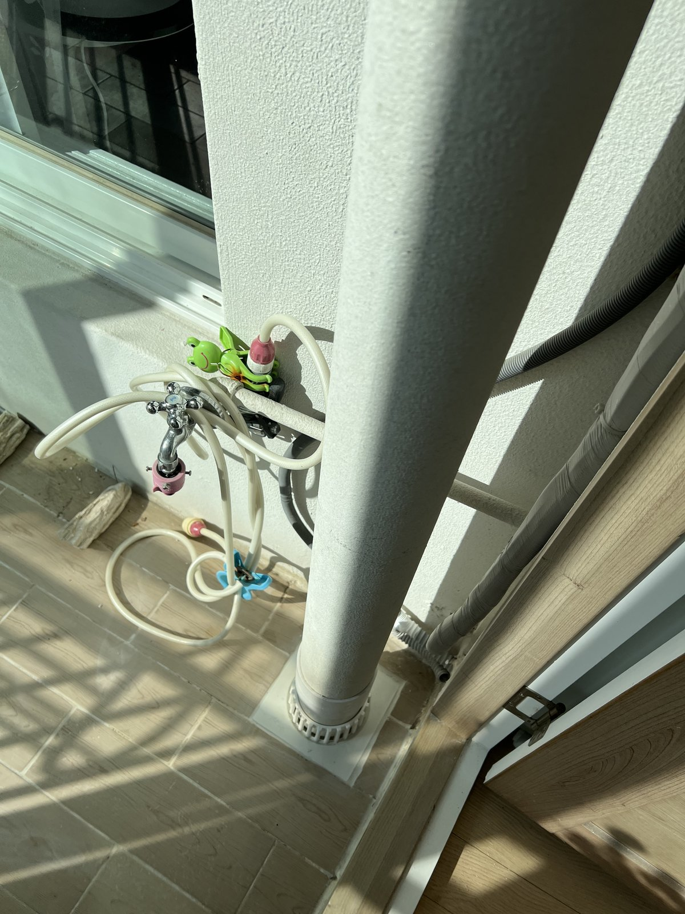
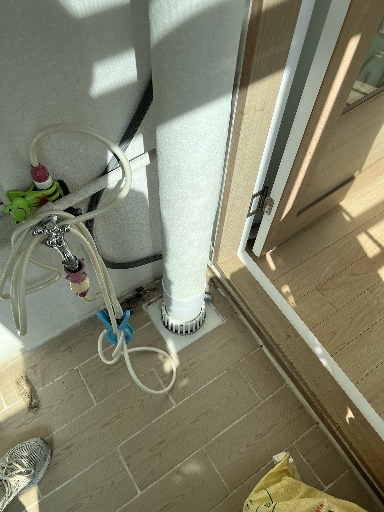
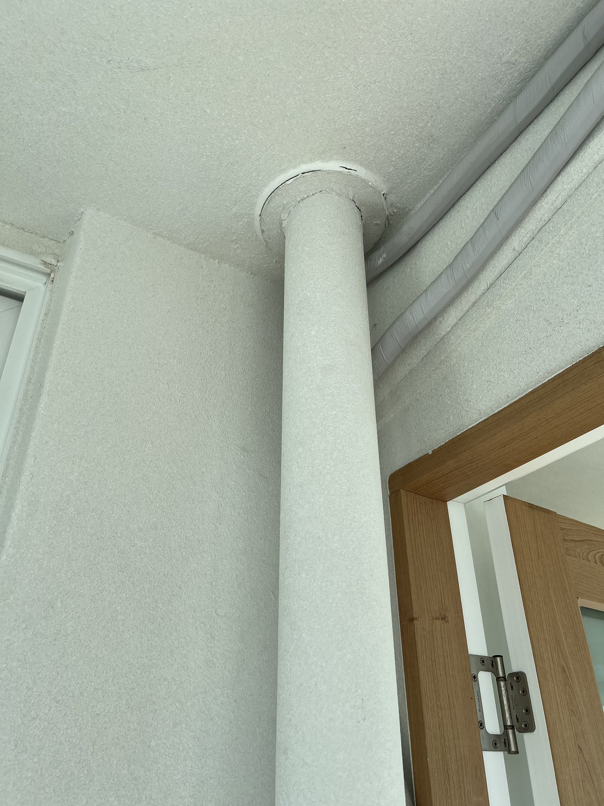
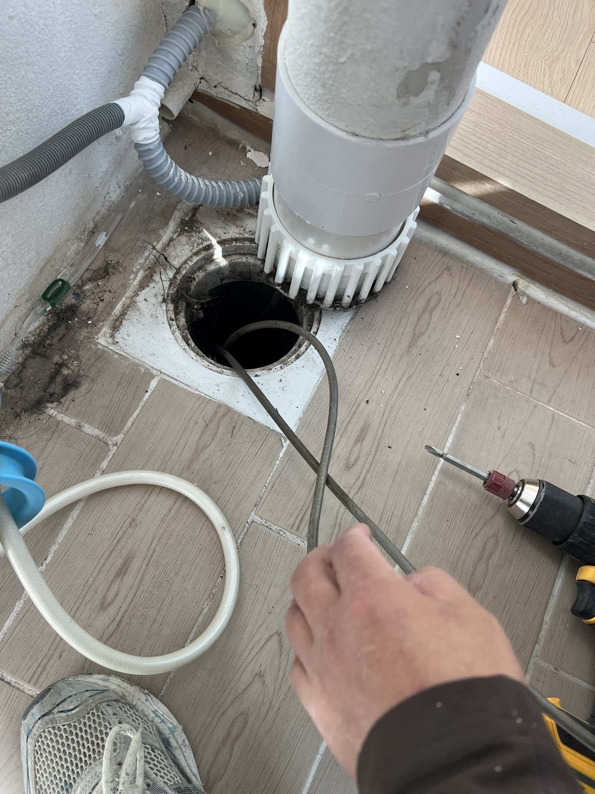
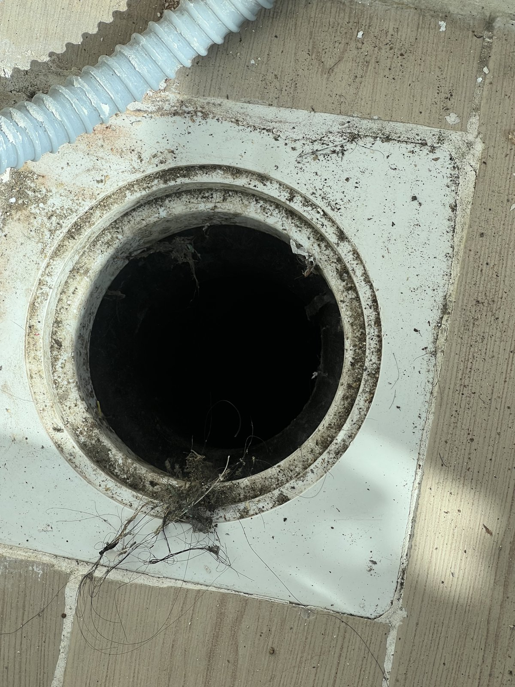
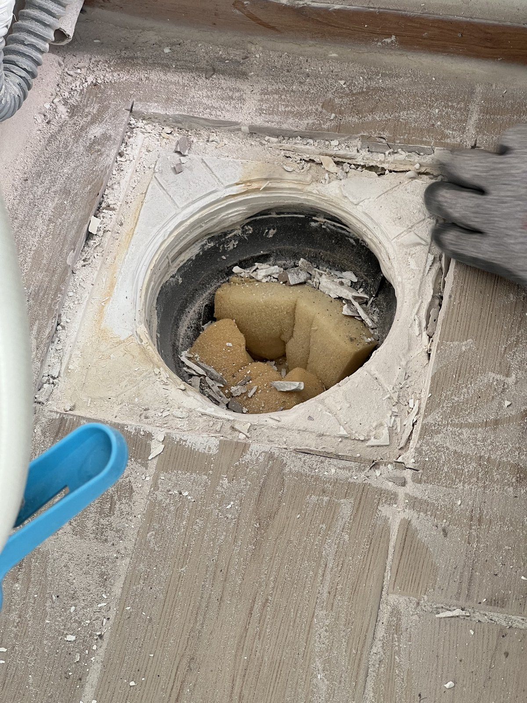
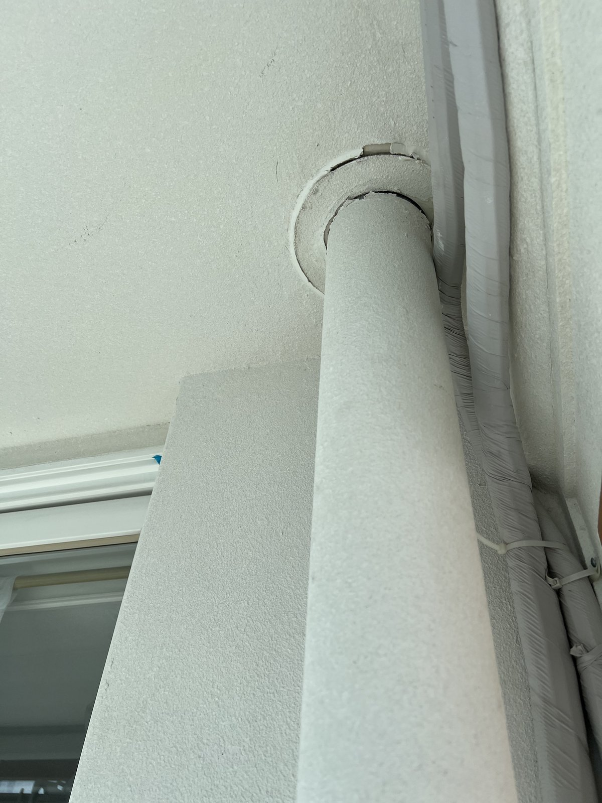

대전 둔산동 수정타운아파트 베란다 우수관 보수｜바닥 연결부를 정리하고 다시 연결

작업 핵심
현장 작업 한눈에 보기
- 현장
- 대전 수정타운아파트 · 베란다 우수관
- 문제
- 우수관 하부 바닥 연결부
이물과 오염이 쌓인 연결 입구 - 작업
- 관 분리·바닥 연결부 정리·타일 절단
우수관 재연결·천장 연결부 마감 - 결과
- 재연결 후 위·아래 연결부 사진 확인
통수시험 수치·소요시간은 미기재
대전 서구 둔산동 수정타운아파트 베란다 우수관 작업입니다. 관을 분리해 오염된 바닥 연결부를 정리하고, 다시 연결해 위·아래 연결부를 마감했습니다. 실제 사진 7장으로 소개합니다.
1. 작업 전 베란다 우수관
대전 서구 둔산동 수정타운아파트 베란다 우수관 작업입니다. 2026년 10월 14일 오후 사진을 순서대로 소개합니다.
작업 전 우수관 하부입니다. 세탁기 수전 옆으로 우수관이 내려와 바닥으로 들어갑니다.

2. 작업 전 천장 쪽
위쪽은 천장 관통부로 이어집니다. 우수관은 위·아래 연결부를 함께 봐야 합니다.

3. 우수관 분리
바닥 연결부에서 우수관을 들어 분리했습니다.

4. 드러난 바닥 연결 입구
관을 들어내자 바닥 연결 입구 둘레에 이물과 오염이 쌓여 있었습니다.

5. 입구를 막고 둘레 정리
작업 중 잔재가 배관 안으로 떨어지지 않게 입구를 막고, 둘레 타일을 사각으로 잘라 정리했습니다.

6. 재연결 후 하부
우수관을 다시 연결하고 하부를 마감했습니다.
7. 천장 쪽 마감
천장 쪽 연결부에도 마감 링을 맞췄습니다. 2번 사진과 비교해 보세요.

8. 확인한 범위와 상담 안내
작업 중에는 베란다를 비닐로 덮어 먼지를 막았습니다. 이번 기록은 사진으로 확인되는 공정 범위이며, 통수시험 수치와 총 작업시간은 자료가 없어 적지 않았습니다.
베란다 우수관 주변에 물 자국이 보이면 발생 시점과 함께 우수관 위·아래 연결부 사진을 준비해 상담해 주세요.